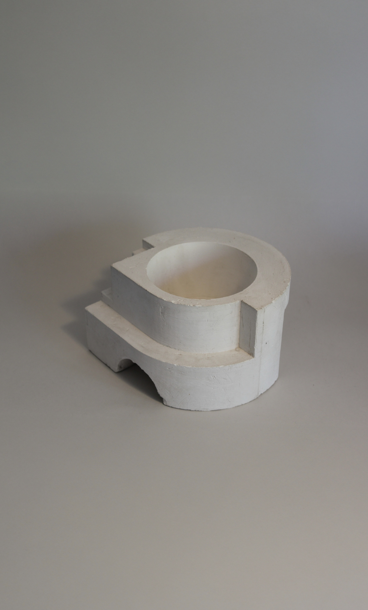
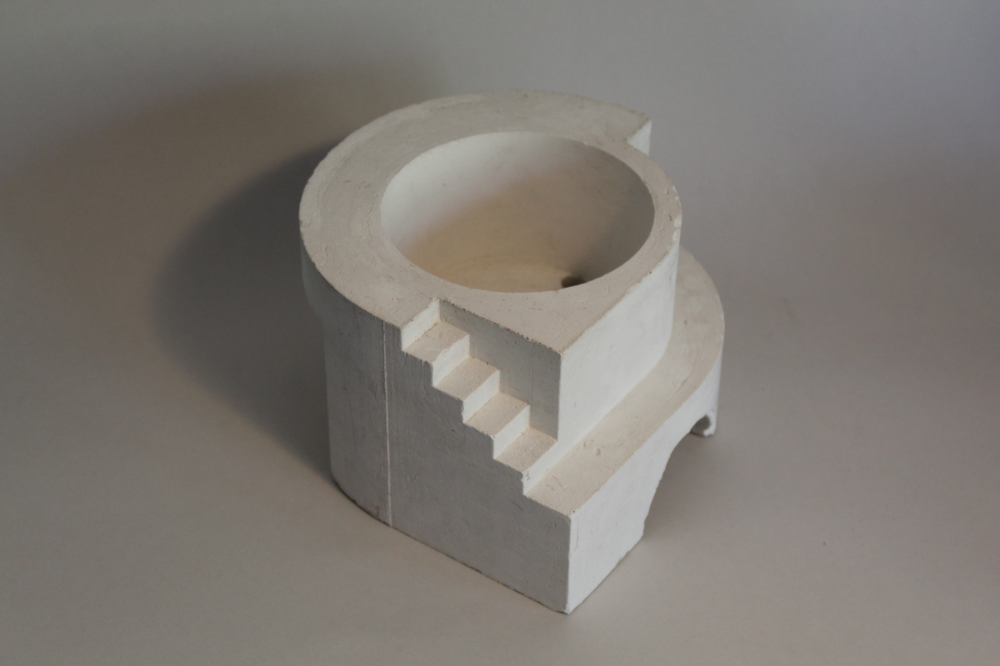

← Volver a proyectos

Maceta
Moldaje · Fabricación digital · 2024Este proyecto es el resultado de mi ramo de Fabricación Digital, en el que desarrollé una maceta a partir de moldes impresos en 3D, modelados previamente en Rhino.

